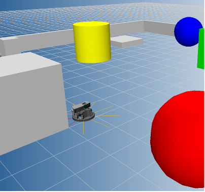
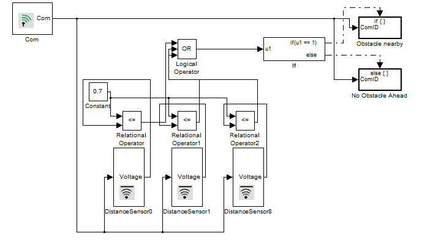
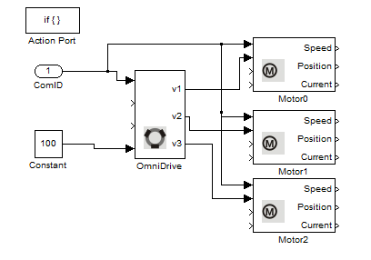
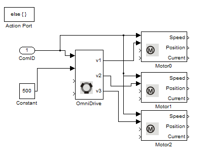

DistanceSensor Example
This example illustrates the use of the Distance Sensors on Robotino. If Robotino is placed in an obstacle cluttered environment then it moves around avoiding the obstacles.
Contents

Blocks used in this example
Description
Robotino is equipped with 9 infrared distance sensors (labelled 0 - 8 ). In this example we read the voltage readings from the 0th (IR1), 1st (IR2) and 8th (IR9) sensor as they are in front of the robot.

Based on the readings from the distance sensors, we can find out if Robotino is approaching an obstacle or not. In case it is, we stop Robotino and let it rotate until all the three distance sensors do not detect any obstacles in front of them. If the sensors don't detect any obstacles in front of them then we let Robotino move forward with a constant velocity.

In case there is no obstacle ahead then

In case there is an obstacle ahead then
